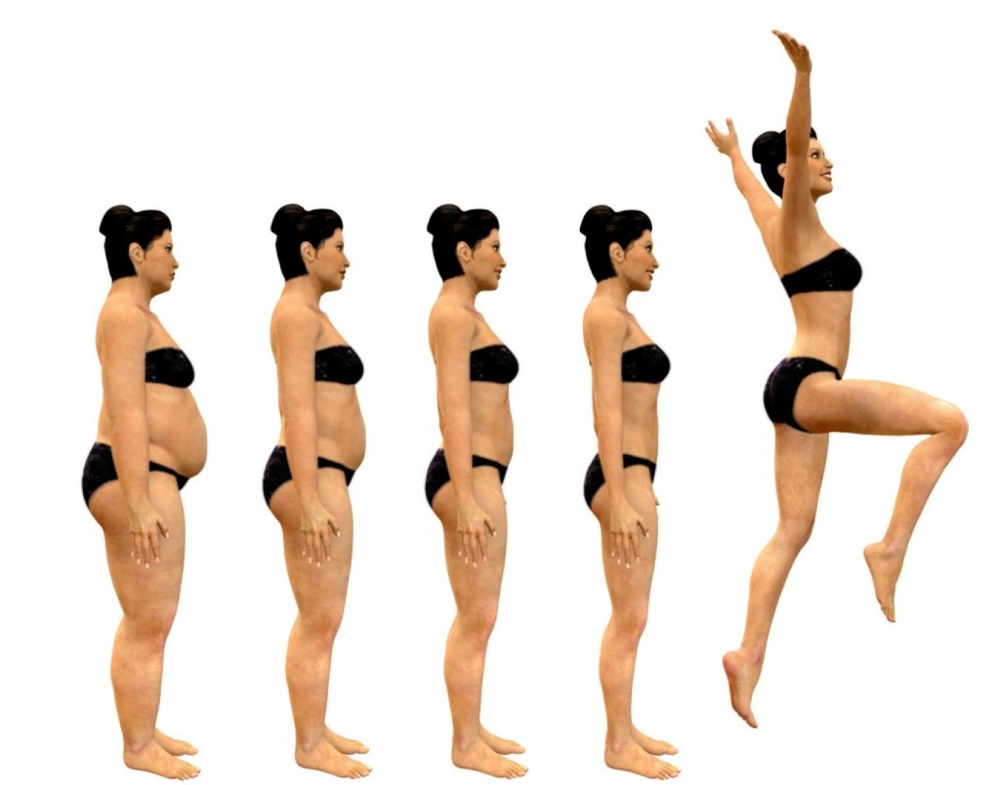

Одно из достоинств человеческого интеллекта состоит в том, что наряду с курением, употреблением спиртного и едой мы сумели создать для себя огромный выбор. Курильщики могут потакать никотиновой зависимости с помощью нюхательного табака, трубок, сигар, сигарет, жвачки, пластыря, спрея для носа. В каждой из перечисленных категорий можно делать выбор между, допустим, пятью марками пластыря или пятью тысячами марок сигарет. То же самое и со спиртным. Существуют в буквальном смысле слова тысячи разновидностей напитков, содержащих алкоголь.
Мы высоко ценим это разнообразие, но как ни парадоксально, большинство курильщиков предпочитает не только одну категорию товаров, но и единственную марку в этой категории. И это их не беспокоит. Напротив, они начинают нервничать, когда единственной излюбленной марки не оказывается в продаже. У любителей спиртного тоже есть пристрастия. Вероятно, на диете мы мучаемся не в последнюю очередь оттого, что привыкли верить: удовольствие может доставлять только широкий ассортимент продуктов. Но если мы обычно выбираем одну марку сигарет и спиртного, почему же с едой дело обстоит иначе?
Это поразительное разнообразие — скорее видимость, нежели реальность. Приведу в пример себя. Завтрак — это, как правило, тарелка хлопьев. Обычно я ем одни и те же хлопья изо дня в день. Изредка я переключаюсь на другую марку хлопьев и ем этот новый завтрак опять-таки изо дня в день. Разнообразным такое питание не назовешь, но меня это не волнует. Думаю, многие люди были бы счастливы просто питаться любимой едой. То же самое относится к овсянке, традиционному британскому или европейскому завтраку: мы изо дня в день поглощаем одно и то же.
И в других случаях разнообразие еды на практике оказывается не таким уж значительным. Эта мысль осенила меня однажды вечером, во время просмотра меню моего любимого индийского ресторана «Мотспер-парк Тандури». По закону подлости, лучший ресторан Великобритании находится где-то на задворках, в Мотспер-парке, где его еще надо найти.
В тот вечер в ресторане было многолюдно. Разговаривая с хозяином заведения, Маликом, соглашаясь и предлагая варианты, мы с Джойс сделали заказ. Малик начал деловито перечислять выбранные нами деликатесы. Очевидно, он давно заметил, что мы каждый раз заказываем одно и то же. А до меня это дошло, только когда я услышал, как он повторяет заказ! В тот же момент я понял, что именно так поступаю в излюбленных китайских и итальянских ресторанах: сначала долго изучаю меню и наконец выбираю то же самое, что и в прошлый раз.
Нас приучили составлять обеды и ужины из нескольких блюд, чтобы питаться сбалансированно, разнообразно и то же время не пресыщаться одной и той же едой, не так ли? А когда мы листаем меню, мы просто выбираем еду, которую предпочитаем. Иными словами, свои любимые блюда. Ясно и то, что на наш выбор влияет множество факторов — погода, степень голода и прочее. Наши заказы меняются изо дня в день и из года в год. И в этом нет ничего плохого. Но ничего плохого нет и в том, чтобы постоянно есть одну и ту же пищу — при условии, что она дает нам энергию и питательные вещества для хорошего самочувствия и здоровья. Ну, не глупо ли отказываться от любимой еды, если она в пределах досягаемости?
Возможно, вас беспокоит мысль, что даже любимой едой можно пресытиться, если есть ее постоянно. Не беда: всегда можно найти новую, я вот переключаюсь с одних хлопьев на другие. Но я подозреваю, что главная причина продуктового разнообразия — в том, что мы едим не любимую еду, а неполноценную пищу, полуфабрикаты. Производители кошачьего корма то и дело выпускают новую еду, уверяя, что перед ней моя кошка не устоит. Мне на нее и смотреть не хочется. И моей кошке тоже. Но почему-то свежие мышки и воробьи ей никогда не надоедают.
Итак, раз и навсегда перестанем опасаться, что «ЛЕГКИЙ СПОСОБ СБРОСИТЬ ВЕС» в чем-нибудь ограничит наш выбор. Если сегодня вы едите любимые блюда на завтрак, обед и ужин, едите их дома и в ресторане, вы будете продолжать в том же духе, пока эта еда вас устраивает. Но выбирать вы будете лишь те блюда, которые вам по-настоящему нравятся, а не те, которые стоят в три раза дороже. И не те, которые навязаны вам рекламой, обещающей неземной вкус. Ешьте то, что дает вам энергию и радость жизни, а не обратный эффект!
Таким образом, мы подошли к чрезвычайно важному элементу «ЛЕГКОГО СПОСОБА СБРОСИТЬ ВЕС» —
Лимиту бесполезного